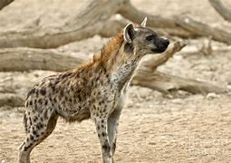

There are two species of hyenas in Kenya the striped hyena and the spotted hyena. They can be found throughout Africa, in all habitats except rainforests. The spotted hyena (also called the laughing hyena) is the largest hyena species, with the females being larger than the males. Their coats are patterned with dark spots. These animals hunt fish, birds, and even hippo calves, and can work in packs to take down wildebeests or antelopes. Striped hyenas are lesser known than their spotted cousins. They are more scavengers than hunters and typically come out at night to feed on carcasses left by other animals. The spotted hyena is listed by the IUCN as least concern, and the striped hyena is near threatened. Human-wildlife conflict is the main threat to their survival.
The Spotted Hyena
